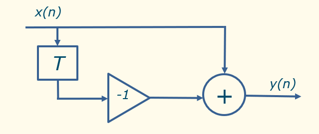
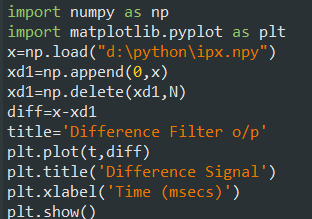
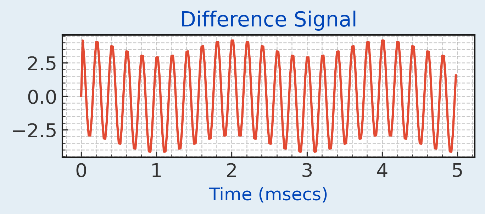

The Difference Filter is shown in the Figure below. The output is y(n) = x(n) - x(n-1). This equation states that the output is obtained by subtracting a delayed version of the input from itself. The block with the capital T represents a delay of 1 sample period. The triangle with the -1 represents a multiplication by -1. The code section below, shows how this can be done.



Looking at the difference filter output you can see that the high frequency content is amplified relative to the low frequency content.
Previous: Plotting the Spectrum of a Signal